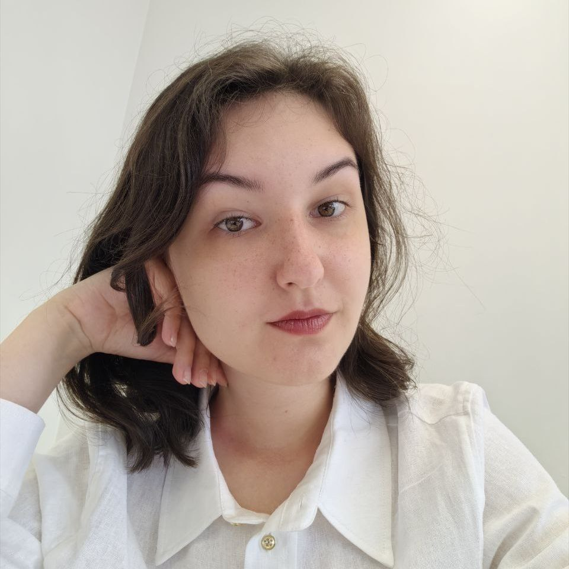

|
Daria Nogina
I am currently a second-year master's student at Lomonosov Moscow State University, specializing in bioengineering and bioinformatics. I also work as a research engineer at IRA Labs, a medical vision startup. At the moment, I'm an intern at MLBio group at EPFL, led by Maria Brbić. Previously I was a researcher at VIGG, supervised by Ivan Kulakovskiy.
Interests: computer vision, uncertainty, OOD detection, active learning, scene understanding.
Email /
CV /
Scholar /
Twitter /
Github
|

|
|
|
Robust Curve Detection in Volumetric Medical Imaging via Attraction Field
Farukh Yaushev, Nogina Daria, Valentin Samokhin, Mariya Dugova, Ekaterina Petrash, Dmitry Sevryukov, Mikhail Belyaev, Maxim Pisov
MICCAI ShapeMI, 2024
arXiv
A novel approach for detecting non-branching curves, which does not require prior knowledge of the object's orientation, shape, or position.
|
|
|
LegNet: a best-in-class deep learning model for short DNA regulatory regions
Dmitry Penzar*, Nogina Daria*, Elizaveta Noskova, Arsenii Zinkevich, Georgy Meshcheryakov, Andrey Lando, Abdul Muntakim Rafi, Carl de Boer, Ivan Kulakovskiy
* - equal contribution as the first author
Oxford Bioinformatics, 2023
paper
An EfficientNetV2-based fully convolutional neural network employing domain-specific ideas and improvements to reach accurate expression prediction from a DNA sequence.
|
|
{kind=link}